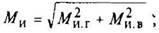
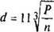

Расчет на прочность
При расчете валов на жесткость диаметры их получаются больше, чем при расчете на прочность, и они работают преимущественно с невысокими напряжениями. Поэтому расчет валов целесообразно вести упрощенно, не учитывая динамический характер нагрузки, т. е. не вводя в формулы коэффициенты концентрации напряжений, характеристики циклов нагружения и т.п. Эти факторы учитывают приближенно соответствующим выбором допускаемых напряжений.
Валы на прочность рассчитывают по формул:
или
где W – момент сопротивления в опасном сечении, мм3: W = πd3/32 ≈ 0,1d3 – для круглого сплошного сечения (см. рис. 1); W = πd3/32(l – d04/d4) ≈ 0,1(d4-d04)/d – для круглого полого сечения (см. рис. 2); [σиз] – допускаемое напряжение, МПа (см. табл. 9), определяемое при динамическом расчете стальных валов по пределу выносливости с учетом факторов, вызывающих концентрацию напряжений, и диаметру вала; Ми -максимальный изгибающий момент в опасном сечении, Н мм:

здесь Ми.г и Ми.в – максимальные изгибающие моменты в опасном сечении, Н·мм, действующие соответственно в горизонтальной и вертикальной плоскостях; Мкр -максимальный крутящий момент в опасном сечении, Н·мм;
– максимальный приведенный (результирующий) момент в опасном сечении, Н · мм.
Диаметр вала из среднеуглеродистой стали (σв = 500 … 800МПа) при расчете на прочность приближенно определяют по следующим формулам:
при постоянной нагрузке и небольших изгибающих моментах (короткие валы из стали Ст5, Ст6 и 45)
при переменной нагрузке и малых изгибающих моментах или при постоянной нагрузке и средних изгибающих моментах

при переменной нагрузке и средних изгибающих моментах или при постоянной нагрузке и значительных изгибающих моментах (длинные валы)
где d – в см; Р – передаваемая мощность, кВт; n – частота вращения вала, мин-1.
Формулы составлены из расчета вала на кручение и обусловливают напряжения: формула (1) τкр = 50МПа; формула (2) τкр = 37МПа; формула (3) τкр = 28,5МПа. При наличии шпоночного паза в опасном сечении вала полученное значение необходимо увеличить на 5-10%.